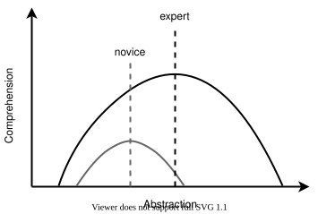

The Problem
-
Most data scientists are self-taught programmers
-
Often know they have gaps in their knowledge
- And other gaps they don't even know about
Complexity
-
One of those gaps is software design
-
A large program is more than just a dozen small programs
-
Most programming language features exist to manage complexity
How to Learn Design
-
Best way to learn design is to analyze, critique, and recapitulate examples
-
These lessons use small versions of programming tools as examples
-
Generally accessible to people who are programming
-
Introduce some fundamental ideas in computer science
-
People who know how tools work are (hopefully) more likely to use them well
-
Who's Your Audience?

-
Experts understand lower and higher abstraction levels than novices
-
Preferred level shifts with experience
-
Code that is optimal for one reader may not be optimal for another
Audience
-
Maya has a master's degree in genomics
-
Knows enough Python to analyze data from her experiments
-
But is struggling to write code that other people (including her future self) can use
-
These lessons will teach her how to design, build, and test large programs in less time and with less pain
Prerequisites
-
Write Python programs using lists, loops, conditionals, dictionaries, and functions
-
Puzzle your way through Python programs that use classes and exceptions
-
Run basic Unix shell commands like
lsandmkdir -
Read and write a little bit of HTML
-
Use Git to save and share files
In Addition
-
Yim teaches two college courses on web programming
-
They are frustrated that so many books talk about details but not about design and use examples that their students can't relate to
-
This material will give them material they can use in class and starting points for course projects
The Big Ideas
-
Source code is just text.
-
A program in memory is just a data structure.
-
We can control and inspect programs while they are running.
-
A week of hard work can sometimes save us an hour of thought.
Usage
-
Written material: Creative Commons - Attribution - NonCommercial 4.0 International license (CC-BY-NC-4.0)
-
Code: Hippocratic License
-
Source available in our Git repository
-
Can all be read on our website
The Author
Greg Wilson has worked in industry and academia for 40 years, and is the author, co-author, or editor of over a dozen previous books. He was the co-founder and first Executive Director of Software Carpentry and received ACM SIGSOFT's Influential Educator Award in 2020.

Dedication
I'm glad you always found time to chat.